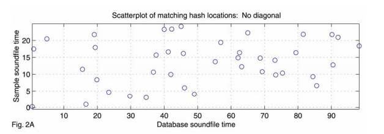

Edward Tidy
July 30, 2022
Have you ever heard a song on the radio and wanted to know its name? Have you ever been out with friends and heard a song you grew up with, but none of you can remember what it's called? Have you ever argued with someone about the artist who performed a song and wanted to be proved right? That's where Shazam comes in.

Shazam is a free application (or App) that you can use to identify a song in seconds. All you have to do is open the App, tap the Shazam button, and let Shazam do the rest. Shazam can tell you the name of the song, the artist you're listening to, and even gives you handy information like upcoming tour dates for that artist.
When you tap on the Shazam button in the App, Shazam will use the microphone on your device to record a short clip of the song you are listening to, called an 'Audio Sample'. Shazam will then compare this Audio Sample against the millions of songs on its database to find a match. The Shazam technology is cross-platform, which means it can be used on lots of different devices such as Smartphones, Computers or even Smartwatches. Recent updates to the technology have expanded this capability, meaning Shazam can even identify the tv show you're currently watching.
When talking about how Shazam works the important thing to understand is that the App doesn't need to review every song and audio clip on its database to find a match. With millions of audio files to work through we would be looking at a period of many years, not seconds, to get a result. Instead Shazam uses 'Audio Fingerprinting'. In the same way that people all over the world have unique fingerprints that can be used to identify them, Shazam calculates unique Audio Fingerprints for each of the files in its database, so that it can sort through them quickly, efficiently and accurately.
Unlike a physical fingerprint, these Audio Fingerprints are actually small chunks of numerical data that represent the audio. These have the twofold benefit of being much smaller, using less processing power to handle, and being much easier to sort through.

When a user records an Audio Sample and uploads it to Shazam, the App will assign it an Audio Fingerprint and then sort through its database to find a match. All of the songs and audio files in the Shazam database have already been assigned Audio Fingerprints, so the whole process of searching to find a match is almost instantaneous.
Shazam analyses the Audio Sample passed to it by looking at three distinct elements: Amplitude, Frequency and Time. Amplitude refers to the loudness of the sound, Frequency is the rate at which the sound repeats itself (which we would think of as its pitch) and Time is normally measured in seconds.
Shazam will assign different values for each of these three elements, and combined they create a unique Audio Fingerprint. That's how it works in a nutshell. But, if you're interested in getting into the nitty gritty of the App then get ready, we're about to dive in.

The first step in creating an Audio Fingerprint involves the use of musical graphs called Spectrograms. Spectrograms are used to show:
The volume of a sound, also called Amplitude
Over a period of time
At various frequencies
In the example below we have a Spectrogram of a piano playing the note C4. The X-Axis has a value of time, the Y-Axis represents frequency, and Amplitude is shown by the intensity of colour. On the right hand side of the image is a chart of how to interpret these colours: more intense, red colours represent a louder volume, lighter colours represent less volume.
C4 is a low, bassy note that sits around a frequency of 240 HZ. We can see on the chart for Amplitude that the loudest noise, correspondening to the note being played, has a frequency of around 240HZ, which is being played in the example audio:
The other horizontal lines denote the other noises made by the instrument when the note is played. Something that is nice to note is that these other tones are evenly spaced, that's because a piano is a harmonic instrument. Whenever a note is played on a piano, you'll also get some quieter harmonies played.

When creating an Audio Fingerprint Shazam will first analyse each note played in the song or Audio Sample and mark them on a Spectrogram, much like the one below.
After creating the initial Spectrogram for the audio it is analysing, Shazam will select the points of greatest Amplitude and mark them on a 'Constellation Map', like the one below.

Often there is more than one point of Amplitude at a specific time, at those points in the song, chords are being played.

If we were to overlay the Constellation Map for our Audio Sample on the Constellation Map for the original song, then there would be a point where they line up perfectly! Unfortunately the way the data is presented at this point means that Shazam would only be able to identify a match if the recording started as soon as the song did.
Because we are still looking at the data relative to the start of the song and the start of the Audio Sample, Shazam can't match these up. To find a match, the user would have to start recording right at the start of the song. How do we find a match for the random section of a song that the user has recorded?
Shazam gets around this problem by looking at the points in relation to each other, not in relation to the song as a whole. For example instead of saying, 'This note is played 20 seconds after the start' Shazam would say 'This note is played 3 seconds before this other note'.
In the diagram below we can see this being put into effect on our example from earlier. Shazam will work through every note (referred to as an anchor point in this instance), and create a 'Target Zone' of notes in front of it. Shazam identifies this Target Zone by looking for notes that will be close enough together in time that they will likely be recorded together when you try to identify a song (Shazam advises it works best with a 5 second clip).
By looking at notes in relation to each other, Shazam identifies 3 important pieces of information:
The frequency of the first note
The frequency of the second note
And the time between them
Shazam creates a small snippet of data containing this information, the first few digits corresponding to the frequency of the first note, the next few representing the frequency of the second note and the final few representing the time between notes being played. These small snippets of data are called 'Hashes' and all combined they make up the songs Audio Fingerprint.
All of the songs and audio files on Shazam's database have already been converted to Hashes and assigned an Audio Fingerprint. When someone wants to search for a song therefore, Shazam only needs to convert the Audio Sample into its own set of Hashes, then start searching its database for a match.
To increase the accuracy of the whole process, Shazam creates far more Hashes than is needed to reliably identify the song. This makes Shazam extremely accurate and robust, as any Hashes that are covered by external noise (like people yelling in a loud pub) will usually not be enough to impact Shazam's operations.

After creating a set of Hashes for the Audio Sample, Shazam starts searching its database to find a match. The more matching Hashes Shazam finds in a song's Audio Fingerprint, the more likely Shazam has found the correct song. To make absolutely certain though, there is one more step in the process.
When Shazam converts the Audio Sample to Hashes, it is actually creating an unordered
set of data. Because Shazam is looking purely for matching Hashes (for
example: E Minor going to E Sharp with a gap of 2 seconds
between the notes and played on a guitar) without putting
emphasis on the order they are played in, it can often find
multiple songs with a lot of matches.

To identify the correct song from these potential matches, Shazam has to consider the order that the Hashes are played in.
For the final step in the identification process, Shazam creates a Scatterplot of all of the matching pairs of Hashes, like the one shown below.
Along the X Axis we have the time of the full song that Shazam thinks could be a match, along the Y Axis we have the time of the audio sample we have recorded. An increase of the values on the Axes would represent the songs playing. If the songs do not match then there will be no correlation between the two, and all of the points that we see on the Scatterplot will have no clear pattern, as is the case above.

If the songs match however we will see a strong correlation, there will be a diagonal line starting from the point in the original song that the Audio Sample is taken from.
As time continues and both samples play we will see the Hashes continuing to match each other and this causes the diagonal line, right up to the point that the Audio Sample finishes. We can see this in the example above. As the original song plays we get to the point where the sample was taken from, we see the hashes match, and as the time increases there are consistent matches.
Shazam is even able to identify the point in the song where the Audio Sample is taken, by looking at the matching pairs of Hashes on the Scatterplot.
By subtracting the time shown on the Audio Sample from the time shown on the original song at the point the Hashes match, you can calculate the start point of the Audio Sample in the original song.
By doing this for every matching pair of Hashes in the Scatterplot Shazam will create a histogram (a graph showing the frequency of numerical data, using rectangles) with a significant spike at the point in the original song that the Audio Sample starts at.
So, next time you're at a pub with friends, or out on the street and you hear a song, why not pull out Shazam and put this into practice? You'll never have to miss out on music again.

Edward Tidy
July 30, 2022